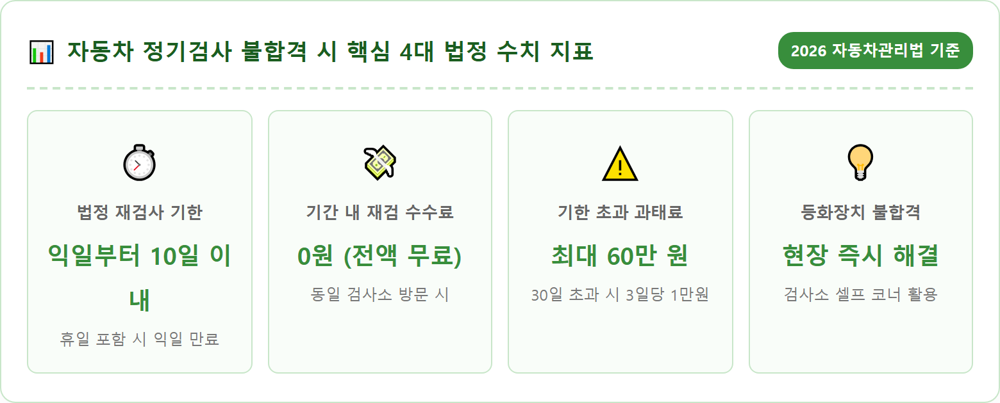
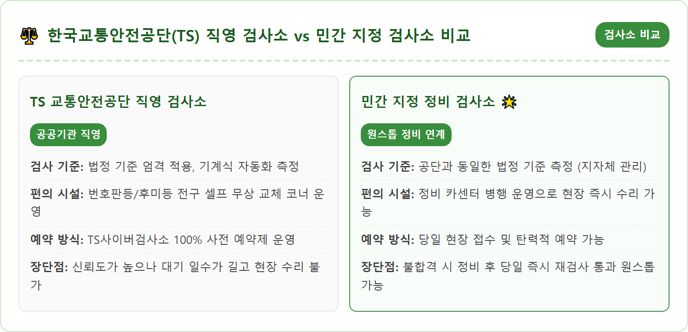
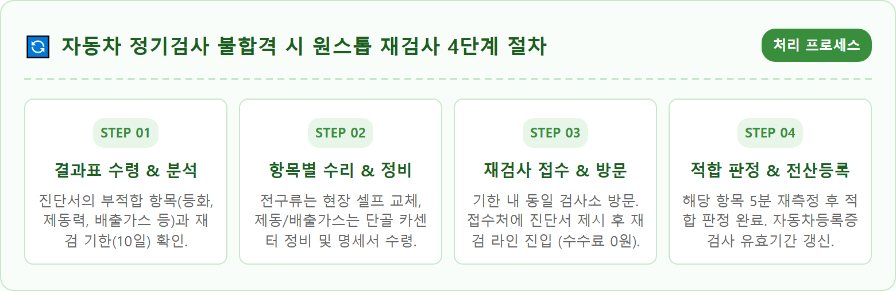
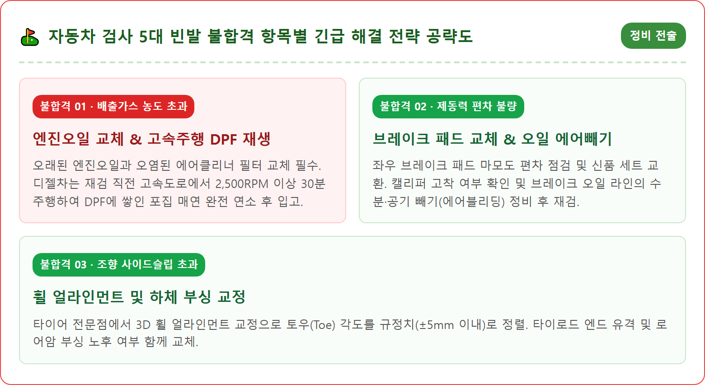
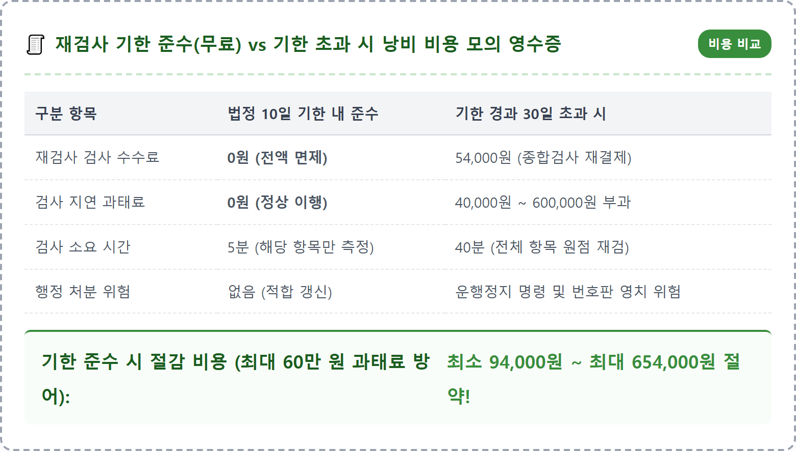
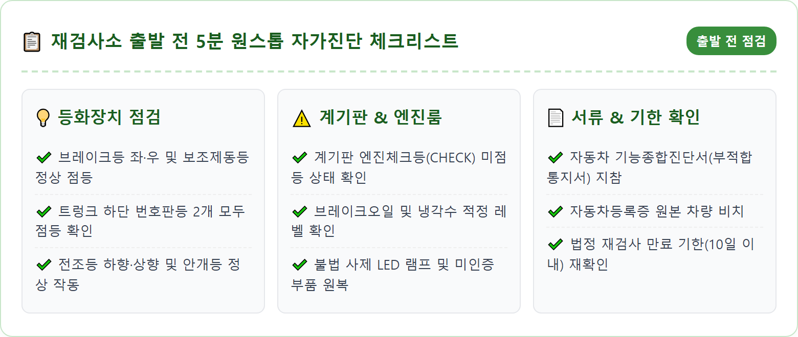
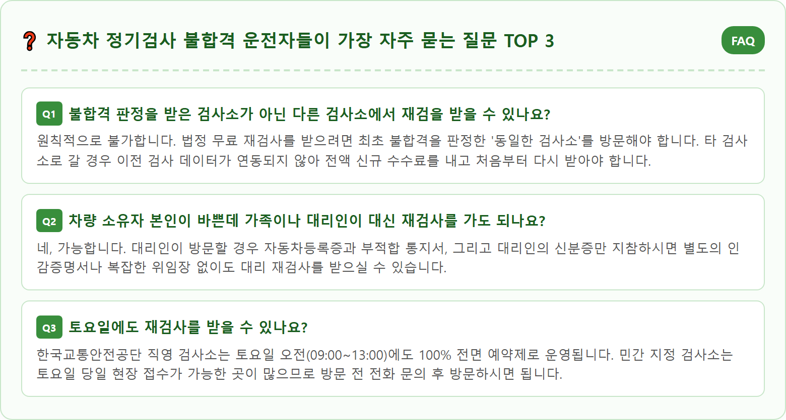

A modern clean automotive vehicle safety inspection center in Korea with automotive technicians inspecting a car chassis and headlights on a hydraulic lift. Digital diagnostic computer screens showing emissions and brake test results, well-lit indoor automotive testing bay, organized diagnostic tools. Professional Korean automotive mechanic wearing uniform explaining inspection checklist to a car owner. Photorealistic, 8k resolution, ultra detailed, natural workshop lighting.

자동차를 소유한 운전자라면 누구나 정기적으로 받아야 하는 의무 절차가 바로 자동차 정기검사(또는 종합검사)입니다. 검사소에 차를 입고시키고 대기실에서 결과를 기다리다가, 모니터에 빨간색 글씨로 '부적합(불합격)' 판정이 뜨는 순간 대부분의 운전자들은 당혹감과 함께 과태료나 막대한 수리비 걱정에 휩싸이게 됩니다.
하지만 자동차 검사에서 불합격 판정을 받았다고 해서 너무 당황하거나 패닉에 빠질 필요는 전혀 없습니다. 불합격은 벌금을 내라는 처벌이 아니라, 차량의 안전이나 환경 기준에 미달하는 결함 부위가 발견되었으니 정해진 기간 내에 수리하여 다시 확인을 받으라는 '시정 권고' 조치이기 때문입니다.
가장 핵심적인 원칙은 **'불합격 판정을 받은 다음 날부터 계산하여 10일 이내에 재검사를 완료하는 것'**입니다. 이 법정 재검사 기간 내에 수리를 마치고 다시 검사소를 찾으면 추가 검사 수수료가 전액 면제(0원)되며, 오직 불합격 판정을 받았던 결함 항목에 대해서만 5분 내외로 신속하게 확인 검사를 받게 됩니다. 불합격 통지서를 받았을 때 운전자가 즉시 취해야 할 단계별 행동 요령을 알기 쉽게 풀어드립니다.
자동차 검사는 크게 **정기검사**와 **종합검사**로 나뉩니다. 정기검사는 신차 등록 후 일정 주기(비사업용 승용차 기준 신차 4년 후 최초, 이후 2년마다)로 차량의 조향, 제동, 등화, 하체 구조 등 순수 안전도 위주로 점검하는 검사입니다. 반면 종합검사는 수도권 및 인구 50만 이상 대도시 등 대기관리권역에 등록된 차량을 대상으로 정기검사 항목에 더해 실제 도로 주행 상태를 모사한 정밀 배출가스 검사(부하검사)를 추가로 실시하는 보다 엄격한 검사입니다.
불합격(부적합) 판정 기준은 자동차관리법 및 대기환경보전법 시행규칙에 엄격하게 규정되어 있습니다. 검사 항목은 크게 조향계통(토우각·사이드슬립), 주행장치(타이어 마모 및 휠 굴절), 제동계통(앞·뒤 제동력 및 좌우 편차), 등화장치(전조등 밝기·광축 및 램프 점등), 배출가스(일산화탄소 CO, 탄화수소 HC, 질소산화물 NOx, 매연 농도), 계기판 경고등 및 불법 튜닝 여부로 구성됩니다.
이 중 단 한 가지 항목이라도 허용 법정 기준치를 벗어나면 전체 판정이 '부적합'으로 처리됩니다. 불합격 판정이 내려지면 검사원은 운전자에게 '자동차 기능종합진단서(부적합 통지서)'를 발급하며, 여기에는 부적합 판정을 받은 구체적인 부품 명칭, 기준 수치, 측정 수치가 명확히 기재되어 있어 정비소에 전달할 수리 지침서 역할을 하게 됩니다.

자동차 검사에서 부적합 판정을 받았을 때 가장 중요한 것은 '달력 계산'입니다. 자동차관리법 시행규칙 제77조에 따르면, 재검사 기간은 **"부적합 통지를 받은 날의 다음 날부터 계산하여 10일 이내"**로 명시되어 있습니다. 예를 들어 10월 29일에 불합격 통지를 받았다면, 당일은 기산되지 않고 다음 날인 10월 30일부터 1일 차로 계산하여 11월 8일까지가 법정 재검사 기한이 됩니다.
단, 예외적인 혜택 조항이 있습니다. 만약 원래 정기검사를 받아야 하는 지정 유효기간(만료일 전후 31일, 총 62일의 검사 가능 기간)의 만료일이 위의 '10일 기한'보다 뒤에 남아 있다면, **둘 중 더 늦은 날짜까지 재검사 기간이 자동으로 연장**됩니다. 예를 들어 정기검사 기간 만료일이 11월 20일인데 10월 29일에 검사를 받아 불합격했다면, 10일 후인 11월 8일이 아니라 본래 만료일인 11월 20일까지 재검사를 받을 수 있습니다.
또한 재검사 기간의 마지막 날(만료일)이 토요일, 일요일, 또는 법정 공휴일인 경우에는 '민법의 기간 계산 원칙'에 따라 **그다음 첫 번째 평일(월요일 등)까지 기한이 자동 연장**됩니다. 불합격 통지서 우측 상단에 인쇄된 '재검사 만료일자'를 반드시 형광펜으로 체크해 두고 기한을 넘기지 않도록 일정을 잡으셔야 합니다.
많은 운전자들이 재검사를 받으면 검사비를 또다시 내야 하는 것으로 오해하곤 합니다. 하지만 정해진 **법정 재검사 기간 내에 동일한 검사소를 방문하면 재검사 수수료는 전액 0원(무료)**입니다. 정기검사 수수료(약 2만~3만 원)나 종합검사 수수료(약 5만~6만 원)를 다시 결제할 필요 없이, 문제가 되었던 불합격 항목만 검사 라인에서 빠르게 재측정받고 적합 스티커를 교부받게 됩니다.
그러나 이 10일의 재검사 기간을 단 하루라도 넘기게 되면 혹독한 경제적 불이익이 발생합니다. 첫째, 기존의 불합격 검사 기록 자체가 완전히 무효화되므로 **신규 검사 수수료 전액을 다시 결제하고 모든 항목을 처음부터 다시 검사**받아야 합니다.
둘째, 더욱 심각한 문제는 **'자동차 정기검사 미수검 과태료'**가 부과된다는 점입니다. 자동차관리법 개정으로 검사 지연 과태료가 대폭 상향되어, 검사 유효기간 만료일로부터 30일 이내인 경우 기본 4만 원이 부과되고, 31일째부터는 3일 초과 시마다 1만 원씩 가산되어 **최대 60만 원까지 과태료 폭탄**을 맞게 됩니다. 10일 기한을 지키는 것만으로도 수십만 원의 생돈 낭비를 막을 수 있습니다.

한국교통안전공단의 통계에 따르면 자동차 검사 불합격 원인의 80% 이상이 특정 5가지 항목에 집중되어 있습니다. 이 빈발 항목들의 특성과 대처법을 미리 알고 있으면 불필요한 과잉 정비를 피하고 빠르게 통과할 수 있습니다.
첫째, 불합격률 1위는 단연 **'등화장치(램프류) 불량'**입니다. 번호판을 비추는 번호등 전구 단선, 브레이크등(제동등) 전구 나감, 전조등 전구 규격 부적합, 미인증 사제 LED 램프 장착 등이 대표적입니다. 둘째는 **'배출가스 기준치 초과'**입니다. 가솔린·LPG 차량의 일산화탄소(CO)나 탄화수소(HC) 초과, 디젤(경유) 차량의 매연 농도 초과나 DPF(매연저감장치) 차압 센서 이상으로 인해 불합격됩니다.
셋째는 **'제동력(브레이크) 기준 미달 및 편차'**입니다. 전축 또는 후축의 브레이크 패드가 편마모되어 좌우 바퀴의 제동력 차이가 8% 이상 벌어지거나, 사이드 주차브레이크의 제동력이 기준치(차량 무게의 20% 이상)에 미달하는 경우입니다. 넷째는 **'조향계통 사이드슬립(토우각) 불량'**으로 타이어 정렬이 틀어져 바퀴가 1m 주행 시 좌우로 ±5mm 이상 미끄러지는 현상입니다. 다섯째는 **'불법 구조변경 및 튜닝'**으로 차체 하부 부식, 화물차 난간대 임의 개조, 허용 기준을 초과한 전면 유리 틴팅(선팅) 등이 지적됩니다.
만약 불합격 사유가 번호등, 제동등, 차폭등 등 단순한 '전구 단선' 때문이라면 카센터로 차를 몰고 갈 필요가 전혀 없습니다. 한국교통안전공단 직영 검사소나 대부분의 민간 검사소에는 검사소 출구 쪽에 **'원스톱 자가 정비 코너(셀프 전구 교체 코너)'**가 별도로 마련되어 있습니다.
이곳에는 십자드라이버, 복스 렌치 등 필요한 공구와 함께 규격별 정품 전구(전구당 1,000~2,000원 상당)가 비치되어 있습니다. 손재주가 없는 분이라도 현장에 상주하는 자원봉사자나 정비 안내원의 도움을 받아 3분 만에 전구를 새것으로 교체할 수 있습니다. 일부 지자체 공단 검사소에서는 번호판등이나 제동등 전구를 무료로 무상 지원하기도 합니다.
전구를 교체한 즉시 검사관에게 확인을 요청하면, 다른 검사 라인에 다시 줄을 설 필요 없이 검사관이 육안으로 점등 상태를 확인하고 그 자리에서 전산에 '적합'으로 즉시 변경 처리해 줍니다. 검사소를 떠나기 전 10분만 투자하면 재방문의 번거로움 없이 당일 원스톱으로 검사를 완결 지을 수 있는 최고의 꿀팁입니다.

배출가스, 브레이크 제동력, 조향계통 등 전문적인 수리가 필요한 항목으로 불합격 판정을 받았다면, 카센터나 1·2급 공업사에 방문하여 정비를 의뢰해야 합니다. 이때 카센터 정비사에게 검사소에서 발급받은 '자동차 기능종합진단서'를 반드시 보여주어야 정확한 부위만 타깃으로 수리하여 과잉 청구를 막을 수 있습니다.
수리를 마친 후에는 반드시 카센터로부터 **'정비점검내역서(정비명세서)'**를 교부받아 챙겨두셔야 합니다. 특히 배출가스 관련 항목이나 조향계통의 경우, 재검사 접수처에서 공인 정비업체의 수리 내역서를 확인 서류로 요구하는 경우가 많기 때문입니다.
수리가 완료되었다면 재검사 일정을 잡아야 합니다. 한국교통안전공단 직영 검사소의 경우 재검사 차량에 한해 사전 온라인 예약 없이 당일 검사소 접수실로 방문하면 우선 순번으로 재검 라인에 진입시켜 주는 '재검사 패스트트랙'을 운영합니다. 민간 지정 검사소 역시 전화 문의 후 방문하시면 대기 없이 곧바로 해당 항목만 신속하게 재측정을 진행해 줍니다.
재검사 기한을 가볍게 생각하고 차일피일 미루다 법정 10일 기한을 넘기는 순간, 지자체 교통행정과 전산망을 통해 과태료 처분 사전통지서가 차량 등록지로 자동 발송됩니다. 자동차관리법 제84조 및 동법 시행령에 따른 검사 지연 과태료 부과 기준은 매우 엄격합니다.
검사 지연 기간이 **만료일로부터 30일 이내인 경우 기본 4만 원**의 과태료가 부과됩니다. 이후 31일째부터는 매 3일이 초과할 때마다 1만 원씩 과태료가 눈덩이처럼 불어납니다. 지연 기간이 115일을 초과하게 되면 **법정 상한선인 최고 60만 원**의 과태료가 최종 부과됩니다.
과태료 부과에도 불구하고 검사를 끝내 받지 않고 1년 이상 방치할 경우, 관할 지자체장은 해당 차량에 대해 '운행정지 명령(운행정지 처분)'을 내리게 됩니다. 운행정지 명령이 내려진 차량을 도로에서 운행하다 적발되면 1년 이하의 징역 또는 1천만 원 이하의 벌금형이라는 무거운 형사 처벌을 받게 되며, 번호판이 강제 영치되므로 기한 내 재검사는 필수적입니다.

정비소에서 수리를 마쳤거나 불합격 항목을 조치한 후 재검사소로 출발하기 전, 운전자가 스스로 5분만 투자해 점검하면 100% 한 번에 합격할 수 있는 사전 자가진단 체크리스트를 공유합니다.
첫째, 자동차 시동을 걸고 비상등을 켠 뒤 차에서 내려 앞뒤 방향지시등, 번호판등, 후미등이 정상 점등되는지 육안으로 확인합니다. 기어를 P에 두고 브레이크 페달을 고정하거나 동승자에게 밟아달라고 하여 양쪽 브레이크등과 보조제동등에 불이 모두 들어오는지 체크합니다. 둘째, 타이어 트레드 홈에 100원짜리 동전을 거꾸로 끼워 이순신 장군의 사모(모자)가 가려지는지 마모도를 확인하고 공기압을 적정치로 맞춥니다.
셋째, 계기판에 엔진 경고등, ABS 경고등, 에어백 경고등 등 노란색이나 빨간색 경고등이 켜져 있는지 확인합니다. 배출가스 검사 전에는 계기판에 어떠한 엔진 경고등도 점등되어 있지 않아야 검사가 개시됩니다. 넷째, 차량등록증 원본을 지참했는지 확인합니다(모바일 등록증도 가능하지만 종이 등록증 지참 시 처리가 빠릅니다). 철저한 사전 준비로 재검사 라인을 가뿐하게 통과하시기 바랍니다.

